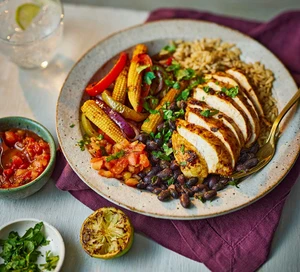

Fajita Chicken Rice Bowl

Description
Make crowd-pleasing fajitas the easy with this one-tray recipe that's full of nutrients.
Perfect for a speedy midweek meal!
Ingredients (Serves 4)
- 2 large chicken breasts
- 2 peppers, sliced
- 2 red onions, sliced
- 200g baby corn
- 3 tsp chipotle chilli paste
- 1 lime, zested then halved
- 2 tsp vegetable oil
- 400g can black beans, drained
- 15g coriander, roughly chopped
- 400g cooked rice (brown or white, your choice)
- 4 tbsp salsa, to serve
Method
- Heat oven to 220c/200c fan/gas 7 and line a large baking tray with baking parchment. Arrange the chicken, peppers, red onions and baby corn on the tray, and spoon over the chipotle paste. Season, then toss to combine. Put the lime halves on the tray, cut-side down, then drizzle the oil over the chicken and veg. Roast for 20 mins, or until everything is cooked through.
- Meanwhile, warm the beans in a small pan over a low heat, and season. Mix the beans with half the coriander and the lime zest, then squeeze over the juice of the roasted lime. Slice the chicken thinly on the diagonal and divide between four bowls along with the veg and brown rice. Sprinlkle over the remaining coriander and server the salsa.